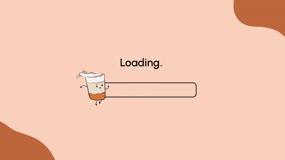
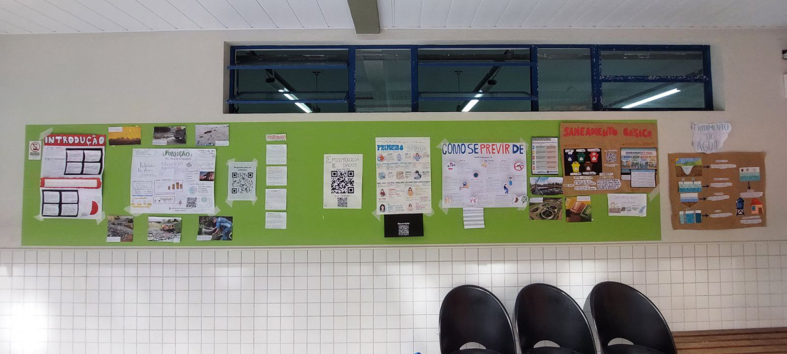
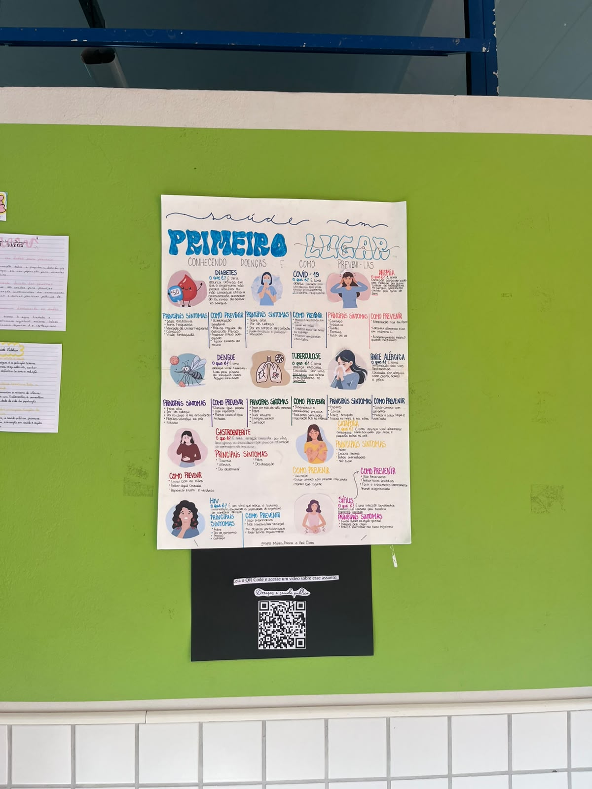
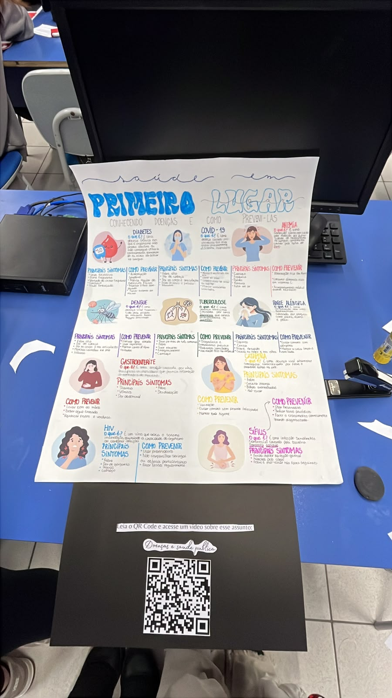

Meus estudos e desempenhos nas
Aqui você pode acompanhar meu desempenho, notas e os principais projetos e trabalhos que desenvolvi nas minhas matérias favoritas na escola!
Atividades, projetos e conhecimentos desenvolvidos na área de Ciências Humanas.
Atividades, projetos e conhecimentos desenvolvidos na área de Linguagens e Códigos.
Atividades, projetos e conhecimentos desenvolvidos na área de Ciências da Natureza.
Atividades, projetos e conhecimentos desenvolvidos na área de Matemática.
Habilidades Avaliadas: C1 ao C12
Descrição: comparar as diferentes realidades entre nações e compreender melhor sobre a condição geopolítica de cada país.
Feedback: Gostei da atividade!
Habilidades Avaliadas: C3 - H15, H16, H20 - C6 - H39
Feedback: Gostei da atividade!
Realizamos uma atividade que narra a trajetória histórica de um país colonizado após a 2ª Revolução Industrial. Utilizando uma sequência de cinco imagens editadas (fotos, mapas e desenhos). O objetivo foi compreender o impacto da colonização industrial na formação histórica do país escolhido.
Habilidades avaliadas: C2 - H8, H10, H12
H15 - Produzir trabalhos individuais e coletivos, explorando materiais e técnicas ligados ao universo das composições artísticas e de práticas corporais.
Habilidades Avaliadas: H4 e H22
Nessa atividade explicamos como funcionava a sociologia na Obra.
Feedback: Gostei bastante da atividade, foi bem legal fazer o vídeo.
Este meme de quatro painéis faz uma paródia da teoria da evolução, sugerindo de forma humorística que a seleção natural também se aplica à música, com Darwin tocando guitarra e celebrando a "evolução dos acordes".
Habilidades Avaliadas:
C3 - Determinar os impactos das ações humanas nos ambientes, identificando suas causas e propondo soluções para a sua redução.
H15 - Comparar propostas de intervenção ambiental aplicando conhecimentos científicos e tecnológicos, observando os riscos e benefícios de sua implementação.
H18 - Identificar situações de risco ambiental na cidade onde reside.
Para o nosso seminário sobre dependência energética global, investigamos se o mundo de hoje sobreviveria sem combustíveis fósseis. Analisamos os setores mais dependentes, as razões científicas para o seu uso massivo e as barreiras tecnológicas e estruturais para a transição. Por fim, debatemos as consequências de um fim abrupto do seu uso e se a nossa dependência é uma escolha ou uma inevitabilidade.
Habilidades trabalhadas:
C1: Entender a ciência e a tecnologia como construções humanas
C2: Aplicar conceitos científicos para explicar fenômenos do cotidiano
H9: Compreender energia e suas transformações
H11: Investigar, levantar hipóteses e tirar conclusões
H1: Interpretar diferentes formas de informação (textos, gráficos, dados)
Fizemos um relatório sobre o experimento que realizamos em aula. O objetivo era ver quem conseguia mover uma pequena bolinha de metal, que estava equilibrada sobre uma superfície, ao longo de uma trajetória pré-definida no menor tempo possível. A regra principal e mais desafiadora era: não podíamos tocar na bolinha com nada.
Habilidades Trabalhadas:
C1 - Compreender as ciências naturais e as tecnologias como construções humanas associadas à cultura dos povos e suas visões de mundo.
H1 - Interpretar informações apresentadas em diferentes linguagens usadas nas Ciências, como texto discursivo, gráficos, tabelas, relações matemáticas, diagramas ou representação simbólica.
C2 - Aplicar os conceitos fundamentais e estruturas procedimentais das Ciências da Natureza na explicação de fenômenos cotidianos, bem como dominar processos e práticas da investigação científica.
H7 - Compreender os conceitos relacionados à Química nos seus diferentes ramos: Fisico-química, Química orgânica e Química Geral.
H9 - Explicar os conceitos de energia, matéria, vida e transformação para explicar fenômenos naturais e procedimentos tecnológicos.
H11 - Empregar procedimentos e práticas de observação, levantamento de hipótese, experimentação, coleta de dados e conclusões para resolução de problemas relacionados às Ciências da Natureza.
H12 - Relacionar informações para construir modelos em ciência e tecnologia.
O objetivo dessa atividade foi tirar a matemática do papel e levar para a mesa de jogo. A ideia foi usar a Análise Combinatória e a Probabilidade não como fórmulas chatas, mas como "superpoderes" para criar estratégias, calcular riscos e tentar vencer o sistema, exatamente como os personagens fazem nos filmes de cassino.
Habilidades trabalhadas:
C5: Aplicar o pensamento probabilístico para quantificar e fazer previsões em situações aplicadas a diferentes áreas do conhecimento e da vida cotidiana.
H30: Identificar dados, regularidades e relações numa situação que envolva o raciocínio combinatório, utilizando os processos de contagem.
H31: Reconhecer fenômenos e eventos (naturais, científicos, tecnológicos e/ou sociais) de caráter aleatório, compreendendo o significado e a importância da probabilidade como meio de prever resultados.
O objetivo dessa atividade foi analisar o filme "Quebrando a Banca" sob a ótica da matemática aplicada. A ideia foi identificar como a Análise Combinatória e a Probabilidade saem dos livros e entram nas mesas de cassino, transformando o jogo de azar em um jogo de estratégia e lógica, além de discutir a ética e as consequências por trás dessas escolhas.
Habilidades trabalhadas:
C5 - Aplicar o pensamento probabilístico para quantificar e fazer previsões em situações aplicadas a diferentes áreas do conhecimento e da vida cotidiana.
H31 - Reconhecer fenômenos e eventos (naturais, científicos, tecnológicos e/ou sociais) de caráter aleatório, compreendendo o significado e a importância da probabilidade como meio de prever resultados.
H32 - Identificar em diferentes áreas científicas e outras atividades práticas modelos e problemas que fazem uso de estatísticas e probabilidades.
Habilidades: Não comentadas.
Nesta atividade, fomos desafiados a escolher um dos 18 temas fundamentais da Segunda Guerra Mundial e realizar uma pesquisa aprofundada, produzindo um dossiê histórico e analisando uma fonte primária relacionada ao tema. Nosso grupo escolheu estudar a ideologia nazista, buscando compreender suas características, ideias e impactos durante o período.
Habilidades: H30, H39 e H40
Nesta atividade, fomos desafiados a realizar uma apresentação oral com tema livre sobre um tema relacionado à sociedade e à política. Nosso grupo escolheu abordar os desaparecimentos políticos durante a Ditadura Militar brasileira, destacando também o papel da Comissão Nacional da Verdade (CNV) na investigação e na busca por informações sobre essas pessoas.
Feedback: Foi o MELHOR trabalho que ja pesquisei e apresentei, tema super interessante e pude aprender muito sobre a CNV. Gostaria de agradecer o prof. Marcus e principalmente ao prof. Lucas por me apresentar repertórios para adicionar a minha apresentação. Muito boa essa atividade e espero de verdade que esses tipos de trabalho com o tema livre seja sempre feito com todas as turmas da escola SESI.
Habilidades: H10, H22, H26 e H27
Nesta atividade, fomos desafiados a escolher um filme que apresentasse características de regimes totalitários e relacioná-lo aos conteúdos estudados em sala. Nosso grupo escolheu Maze Runner, analisando sua história, os comportamentos de controle e as situações de manipulação presentes no filme.
Habilidades: H3 e H24
Nesta atividade, fomos desafiados a criar um Vídeo Manifesto com o objetivo de promover a conscientização sobre temas atuais. Nosso grupo escolheu abordar as redes sociais e como o uso excessivo delas pode prejudicar nossas relações sociais, desenvolvendo um roteiro, gravando os conteúdos e realizando a edição do vídeo.
Habilidades: H25
Nesta atividade, fomos desafiados a apresentar, em inglês, três coisas que mais gostamos: nosso artista favorito, nosso filme favorito e nossa música favorita. Para cada um, pesquisamos sua história, características e informações importantes, além de explicar nossas escolhas e opiniões pessoais. A atividade também teve como objetivo praticar a Língua Inglesa, especialmente o uso do Simple Past.
Habilidades: Redação
Não fiz a primeira redação mas fiz a reescrita. Por algum motivo simplesmente não entregou e acabei vendo só por agora.

Habilidades trabalhadas: C2, H11, C3, H15, H18, C4
Nesta atividade avaliativa, fomos desafiados a transformar conhecimentos científicos em uma exposição interativa sobre a relação entre meio ambiente e saúde. Por meio de pesquisas, análise de informações e produção de materiais visuais, fomos incentivados a construir coletivamente um painel científico (mural), com o objetivo de informar, conscientizar e envolver a comunidade escolar, demonstrando como os fatores ambientais influenciam a saúde da população.
Feedback: Gostei da atividade



Habilidades: C2, H6, H7 e H9
Nesta atividade, fomos desafiados a compreender a aplicação da estequiometria na produção de amônia e fertilizantes. Pesquisamos sobre o processo de produção, realizamos cálculos e analisamos seus impactos ambientais, conhecendo também a proposta da amônia verde.
Feedback: Gostei de apresentar a atividade.
Habilidades: C1, H3, H4, C2, H12, C4, H23
Feedback: Gostei da atividade.
Habilidades: C4, H27, H28 e H29
Elaboração e aplicação de uma pesquisa estatística quantitativa com uma amostra de 32 pessoas. O estudo analisou quanto tempo as pessoas passam no celular antes de dormir, culminando na construção de gráficos explicativos e tabelas de frequência.
Feedback: Gostei de realizar as pesquisas.